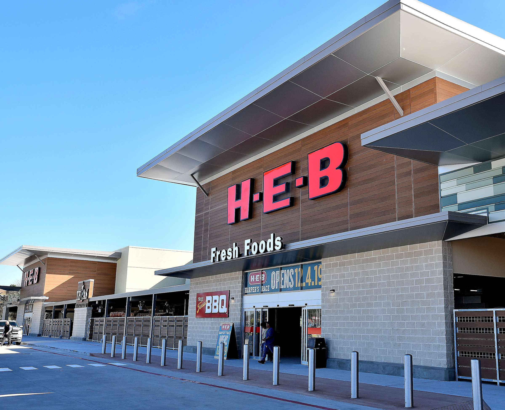

H-E-B

H-E-B Grocery Company, LP is an American privately held supermarket chain based in San Antonio, Texas, with more than 340 stores throughout the U.S. state of Texas, as well as in northeast Mexico. The company also operates Central Market, an upscale organic and fine foods retailer.
Geographic scope: United States, Texas
Subsidiary: Favor Delivery, Central Market
Place founded: Kerrville
Person: Charles Butt